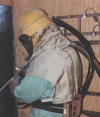

Abrasive Blasting
 ShareCompartir
ShareCompartir

Abrasive blasting may have several hazards associated with it at any given time. Abrasive blasting is more commonly known as sandblasting since silica sand has been a commonly used material as the abrasive, although not the only one always used. Abrasive blasting entails accelerating a grit of sand sized particles with compressed air to provide a stream of high velocity particles used to clean metal objects such as steel structures or provide a texture to poured concrete. This process typically produces a large amount of dust from the abrasive, anything on the substrate being abraded, and/or the substrate itself.
If the process is not completely isolated from the operator, abrasive blasting dusts are a very great health risk. Respirable dust from silica sand and other abrasive materials pose a risk to the lungs. Where abrasive blasting is used to remove lead-based paint on the steel infrastructure of bridges, it can generate particles of lead that pose a risk to the nervous system. In addition to potential health hazards, abrasive blasting can pose safety risks as well. Cleaning steel while working from scaffolding introduces a fall risk and from within industrial tanks a confined space risk. The abrasive stream itself can cause physical harm to the operator or anyone close by. There are NIOSH guidelines and OSHA regulations addressing many aspects of abrasive blasting including such things as proper airline length, and quality of breathing air provided to the abrasive blasting respirator. There is much to know about abrasive blasting and the associated hazards in order to consistently perform the task safely.
NIOSHTIC-2 Search
NIOSHTIC-2 search results on Abrasive Blasting
NIOSHTIC-2
is a searchable bibliographic database of occupational safety and health publications, documents, grant reports, and journal articles supported in whole or in part by NIOSH.
NIOSH Resources
The links to external web sites included below are provided for informational purposes only. Citation should not be taken as endorsement by NIOSH of the web site content nor of the sponsoring organization.
Carbon Monoxide Poisoning
Carbon Monoxide Hazards from Small Gasoline Powered Engines
-
Laborer Dies of Carbon Monoxide Poisoning During Sandblasting Operations in Virginia
In-house FACE Investigative Report No. 1991-31
Criteria for Abrasive Blast Cleaning Operations
-
Industrial Health and Safety Criteria for Abrasive Blast Cleaning Operations
HEW Publication No. (NIOSH) 75-122 (1975)
Engineering Control
-
Abrasive Blasting Operations, Engineering Control and Work Practices Manual
HEW Publication No. (NIOSH) 76-179 (1976) -
Control Technology for Removing Lead-Based Paint from Steel Structures: Chemical Stripping
[PDF - 328 KB]
Survey Report No. ECTB 183-17a, June 1999 -
Control Technology for Removing Lead-Based Paint from Steel Structures: Abrasive Blasting using Staurite XL in Containment
[PDF - 531 KB]
Survey Report No. ECTB 183-13a, July 1993 -
Control Technology for Removing Lead-Based Paint from Steel Structures: Abrasive Blasting using Steel Grit with Recycling
[PDF - 1,001 KB]
Survey Report No. ECTB 183-12a, June 1993 -
Control Technology for Removing Lead-Based Paint from Steel Structures: Chemical Stripping using Caustic (Peel Away ST-1)
[PDF - 518 KB]
Survey Report No. ECTB 183-15a, November 1994 -
Control Technology for Removing Lead-Based Paint from Steel Structures: Abrasive Blasting Inside Two Ventilated Containment Systems
[PDF - 202 KB]
Survey Report No. ECTB 183-14a, December 1994 -
Control Technology for Removing Lead-Based Paint from Steel Structures: Power Tool Cleaning
[PDF - 303 KB]
Survey Report No. ECTB 183-16a, November 1995 -
Control Technology for Removing Lead-Based Paint from Steel Structures:
[PDF - 423 KB]
Survey Report No. ECTB 183-22, May 1999 -
Control Technology for Removing Lead-Based Paint from Steel Structures:
[PDF - 534 KB]
Survey Report No. ECTB 247-11, December 1999
-
Painter/Sandblaster Dies Following a 30-foot Fall from Scaffolding Inside a Water Tank-South Carolina
In-house FACE Investigative Report No. 1993-15 -
Preventing Worker Injuries and Deaths Caused by Falls From Suspension Scaffolds
DHHS NIOSH Publication No. 92-108 (August 1992)
-
Preventing Lead Poisoning in Construction Workers
DHHS (NIOSH) Publication No. 91-116a (April 1992) -
Protecting Workers Exposed to Lead-Based Paint Hazards, A Report to Congress
DHHS (NIOSH) Publication No. 98-112 (January 1997)
-
Silicosis
-
Construction Workers: It's Not Just Dust!... Prevent Silicosis
DHHS (NIOSH) Publication No. 97-101 -
Preventing Silicosis and Deaths in Construction Workers
DHHS (NIOSH) Publication No. 96-112 (1996)
en Español -
Preventing Silicosis and Deaths From Sandblasting
DHHS NIOSH Publication No. 92-102 (August 1992)
en Español - Silicosis in Abrasive Blasting
-
Silicosis: Learn the Facts!
DHHS (NIOSH) Publication No. 2004-108
en Español
-
Construction Workers: It's Not Just Dust!... Prevent Silicosis
- Tuberculosis (TB
-
Abrasive Blasting Respiratory Protective Practices
HEW Publication No. (NIOSH) 74-104 (1974) - Respiratory Protection Programs
Substitutes for Silica Sand Use
-
Comparative Pulmonary Toxicity of Blasting Sand and Five Substitute Abrasive Blasting Agents
Porter DW, Hubbs AF, Robinson VA, Battelli LA, Greskevitch M, Barger M, Landsittel D, Jones W, Castranova V. 2002. COMPARATIVE PULMONARY TOXICITY OF BLASTING SAND AND FIVE SUBSTITUTE ABRASIVE BLASTING AGENTS. Journal of Toxicology and Environmental Health, Part A 65(16):1121-1140. -
Chemical Composition of Coal and Other Mineral Slags
Stettler LE, Donaldson HM, Grant GC. 1982. Chemical composition of coal and other mineral slags. American Industrial Hygiene Association Journal 43(4):235-238. -
Comparison of Occupational Exposures Among Painters Using Three Alternative Blasting Abrasives
Meeker JD, Susi P, Pellegrino A. 2006. Case Study. Journal of Occupational and Environmental Hygiene 3(9):80-84. -
Comparative Pulmonary Toxicity of 6 Abrasive Blasting Agents
Hubbs AF, Minhas NS, Jones W, Greskevitch M, Battelli LA, Porter DW, Goldsmith WT, Frazer D, Landsittel DP, Ma JYC, Barger M, Hill K, Schwegler-Berry D, Robinson VA, and Castranova V.
Comparative Pulmonary Toxicity of 6 Abrasive Blasting Agents. Toxicol. Sci. 2001 61: 135-143. -
Abrasive Blasting Agents: Designing Studies to Evaluate Relative Risk
Hubbs A, Greskevitch M, Kuempel E, Suarez F, Toraason M. 2005. Abrasive Blasting Agents: Designing Studies to Evaluate Relative Risk. Journal of Toxicology and Environmental Health, Part A 68(11):999-1016. -
Substitute Materials for Silica Sand, Evaluation of Substitute Materials for Silica Sand in Abrasive Blasting
This document contains the results from a contract that directed KTA-Tator, Inc. to conduct a three-phase study for the purpose of investigating relative levels of 30 different health-related agents and other attributes of surface preparation of the alternative abrasives to silica sand.
U.S. Governmental Resources
The links to external web sites included below are provided for informational purposes only. Citation should not be taken as endorsement by NIOSH of the web site content nor of the sponsoring organization.
Abrasive Blaster Dies of Carbon Monoxide Poisoning
Bureau of Labor Statistics - Injuries, Illnesses, and Fatalities (IIF) program
Electronic Library of Construction Occupational Safety & Health
OSHA Abrasive Blasting in Shipyard Employment
OSHA Safety and Health Topic, Lead
OSHA Technical Link on Confined Spaces
OSHA Training Materials for Silicosis
Non-U.S. Governmental Resources
The links to external web sites included below are provided for informational purposes only. Citation should not be taken as endorsement by NIOSH of the web site content nor of the sponsoring organization.
A Review of Engineering Control Technology for Exposures Generated During Abrasive Blasting Operations
Flynn MR, Susi P. 2004. A Review of Engineering Control Technology for Exposures Generated During Abrasive Blasting Operations. Journal of Occupational and Environmental Hygiene 1(10):680-687.
American National Standards Institute
The Center for Construction Research and Training (formerly the Center to Protect Workers' Rights)
Control Technology for Crystalline Silica Exposures in Construction: Wet Abrasive Blasting
Mazzuckelli L, Golla V, Heitbrink W. 2004. Case Studies. Journal of Occupational and Environmental Hygiene 1(3):26-32.
Ergonomics of Abrasive Blasting: A Comparison of High Pressure Water and Steel Shot
Rosenberg B, Yuan L, Fulmer S. Ergonomics of Abrasive Blasting: A comparison of high pressure water and steel shot, Applied ErgonomicsVolume 37, Issue 5, September 2006, Pages 659-667.
Health and Safety Executive - COSHH Essentials in Construction: Silica
A series of informative guides that describe various processes and tasks which may generate respirable crystalline silica. These guides examine work tasks in 8 different industries, and describe areas to reduce exposure to workers. The HSE-UK developed the guides, which were then translated into Spanish by NIOSH.
en Español
Laborer's Health and Safety Fund of North America
Michigan State University - Abrasive Blasting, Preventing Silicosis
Stop Silicosis in Sandblasters Use Silica Substitutes
New Jersey Occupational Health and Surveillance Program
- Page last reviewed: April 26, 2011
- Page last updated: September 21, 2012
- Content source:
- National Institute for Occupational Safety and Health Education and Information Division